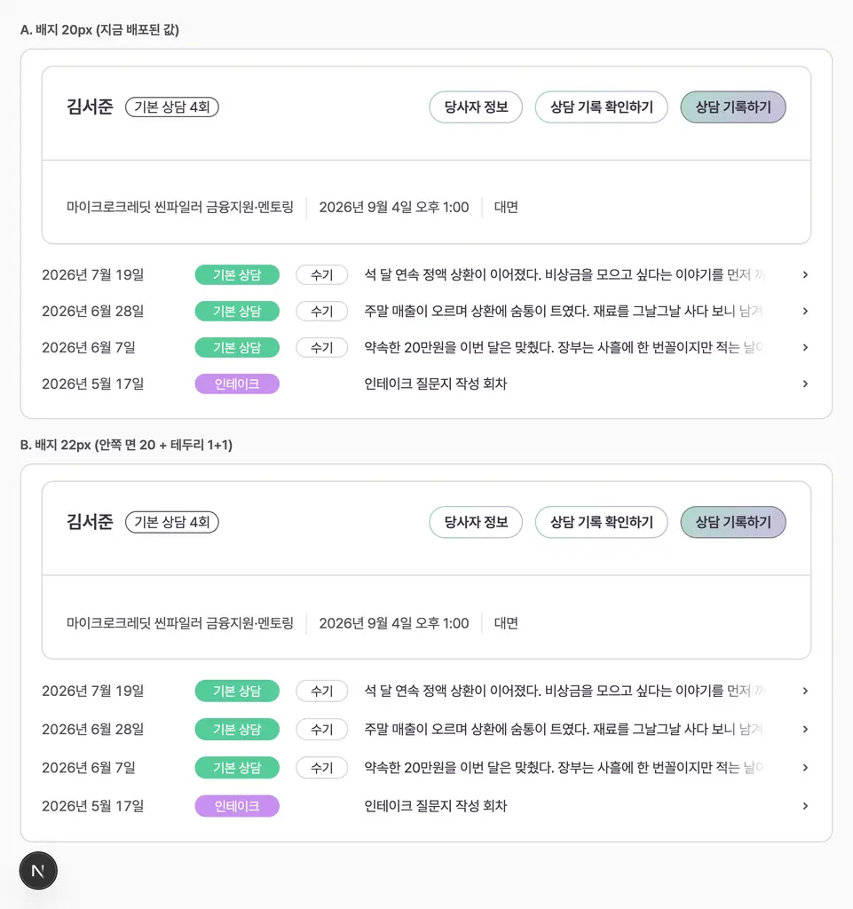
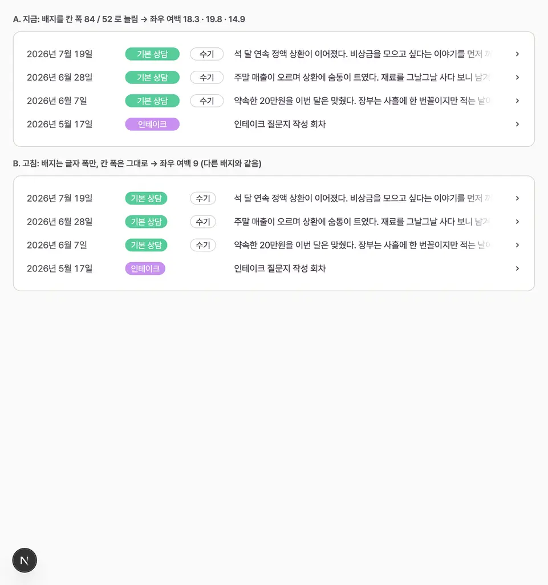
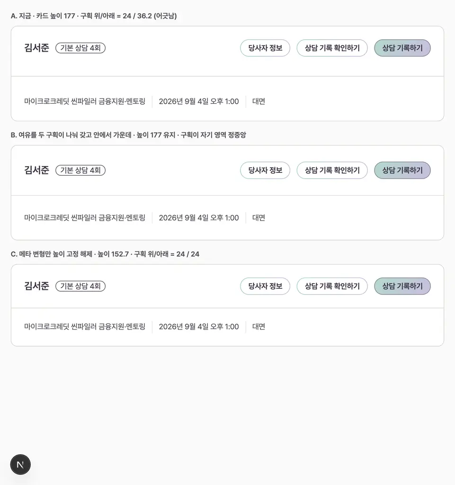

2026-09-04 디자인 결정 3건 비교
전부 로컬 dev 서버(15초 페이지, 1440px 라이트)를 실제로 렌더해 잡은 화면이다. 수치는 브라우저 실측값이다.
1. 배지 높이 20px vs 22px
| A. 20px (지금) | B. 22px | |
|---|---|---|
| 보이는 알약 | 20 | 22 |
| 안쪽 흰 면 | 18 | 20 |
| 회차 목록 카드 높이 | 550 | 566 |
| 딸린 작업 | 없음 | DESIGN-RULES §5 문구, design:align 게이트, 라벨 행과 카드 머리의 20 예약도 함께 22로 |

2. 회차 행 유형 배지의 좌우 여백
| 자리 | 배지 폭 | 실제 좌우 여백 |
|---|---|---|
| 15초 페이지 기본 상담 | 84 고정 | 18.3 |
| 15초 페이지 인테이크 | 84 고정 | 19.8 |
| 15초 페이지 수기 | 52 고정 | 14.9 |
| 그 밖의 모든 배지 (표본 32개) | 내용 폭 | 9 |
원인은 .briefing-session-kind>.wire-badge{width:100%}와 .briefing-session-memo>.wire-badge{width:100%} 두 줄이다. 본문 텍스트 칸 시작 x는 두 안 모두 369로 같다.

3. HERO 가로선 위아래 여백
| A. 지금 | B. 여유 나눠 갖기 | C. 높이 고정 해제 | |
|---|---|---|---|
| 카드 높이 | 177 | 177 | 152.7 |
| 구획 위 / 아래 | 24 / 36.2 | 자기 영역 정중앙 | 24 / 24 |
| 2026-09-02 높이 통일 결정 | 유지 | 유지 | 되돌림 |
HERO는 .participant-hero-card, .participant-hero-top, .participant-hero-divider, .participant-hero-meta 전용 선택자를 이미 갖고 있고 min-height를 가진 카드도 HERO 하나뿐이라, 여기를 고쳐도 다른 카드는 움직이지 않는다.
